Lockout - NotAudited.xyz Lockout 是 Sterling Crispin 的一项实验性智能合约，是 NotAudited.xyz 的一部分，没有任何明示或暗示的保证。 锁定代币的铸造有一个生命周期，当它结束时，代币变得不可转让。最大供应量
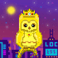 locnftmetro-pre 🌎 生成您独特的小猫头鹰不仅可以获取会员福利和奖池，还可以保护加拿大受伤和孤儿的猫头鹰。🦉 小猫头鹰公司首次推出他们的第一个项目 Metrop{owl} 是：1200 只
LODB Angels Collection The League of Divine Beings 是 P2E 游戏 NFT 的 4 部分系列下降 w/Staking：Devils、Angels、Hybrids 和 Mutants。 每个都有 10k 个独特的 NFT https://discord.gg/divinebeingsnft 经
LoFi Moonwalkers 拥有 Moonwalkers，获得被动奖励，同类首个 NFT 唱片公司！过去 7 天没有售出 MoonwalkerFM。 MoonwalkerFM NFT - 常见问题（FAQ） ▶ 什么是 Mo
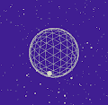 LoFiStargazer 令牌基础元数据直接存储在合约中，其字段值在每个 tokenURI() 合约调用中生成。 它包含名称、图像、animation_url。 名称值是从 token_id 生成的。 图像值有一
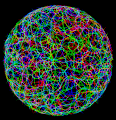 Logarithms 重要事项在 OpenSea 上购买对数之前，请查看我们的网站 - 所有列表、报价和购买均受 https://logarithms.art 上列出的燃烧时间表的约束。对数增长的活生生的艺术演示。 对数集合是其前
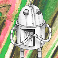 LogicBots series 2021 [Universe A] 我们是来自 ‘Universe A’ 的 ‘LogicBots’ 20 独特的，直接来自 LogicBeach 的手工制作的机器人！我们中的一个人拥有一个秘密 [已编辑]，并将向任何声称我们的人透露它…
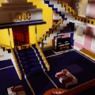 Loie Wearables 欢迎来到 OpenSea 上的 Loie Wearables 之家。 发现这个系列中最好的项目。解放日 日本殖民时代结束纪念日（1945年8月15日）过去 7 天内没有售出 Loie 可穿戴设备。 Loie 可穿
LONELY BUG by Liam Payne Zedd Silly Gabe and Gary Vee 安全、脆弱、孩子气、充满希望：流行歌星在成名时保持情感基础是民间传说。 被屏蔽在一个孩子气的状态。 由 Liam Payne、Zedd 和 Sillygabe 在 2020 年的 Covid-19 封锁期
Lonely Legends Genesis V2 The Lonely Legends 是漫画/卡通人物的集合，他们在元宇宙中为荣耀而战。遇见孤独的传说 Lonely Legends 是 5,555 个生成 PFPS 的集合，他们在元宇宙中为荣耀而战。 [薄荷是活] 收集和交
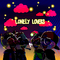 Lonely Lovers Club 孤独的恋人 | 由艺术家 Brandon Hernandez 用爱手工绘制。 由代码生成并由艺术家策划。我们的目标是传播爱并让尽可能多的人加入 Web 3。您拥有 NFT 的 100% 知识产权，随心所欲地
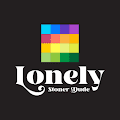 Lonely Stoner Dude - OG Edition Lonely Stoner Dude (LSD) 是一组四个系列，而 OG 版是第一个。 你的 Lonely Stoner Dude 是不断给予的 NFT。 您不仅会获得一个吸毒的化身，而且您还将成为一个由志同道合的人组成的独家
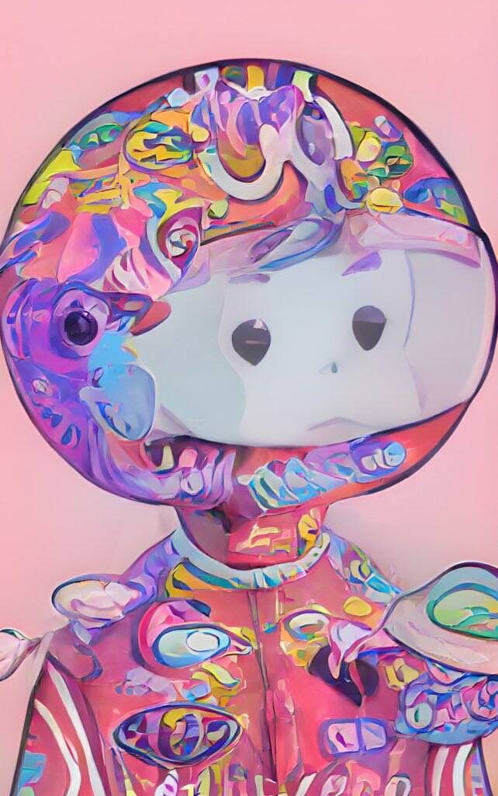 LonelyFlop LonelyFlop NFT - 常见问题（FAQ） ▶ 什么是 LonelyFlop？ LonelyFlop 是一个 NFT（非同质代币）集合。存储在区块链上的数字艺术品集合。 ▶ 存在多少个 LonelyFlop 代币？
LonerBeasts official LonerBeasts 冲进元界 || 完全动画的免费铸币 nft 项目。LFRUNNNNN 供应：7,777 铸币价格：免费 LonerBeasts NFT - 常见问题（FAQ）过去 7 天没有售出LonerBe
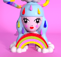 Long Cloud Selfie Long Cloud Selfie 是由 Amanda Toy 创建的 1 of 1 3D 合集。 Long Cloud Selfie 是一个劝告，以一个一直在做白日梦的人的轻盈自拍照。 这个地方是一个舒适的世外桃源，同时也是一个实验室，
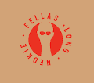 Long Neckie Fellas Long Neckie Fellas 是由 12 岁的数字艺术家 Nyla Hayes 创作的 3333 个不同的 Fellas 的手绘、计算机生成的美术收藏品。 每款 Long Neckie 都有一个细长的脖子，灵感来自 Nyla 最喜欢的恐龙雷龙。 Long Neckie
Longzu Pass 过去 7 天，龙族通证 NFT 共售出 16 次。龙族通行证的总销售额为 1.47 万美元。龙族通证 NFT 的平均价格为 91.6 美元。龙族通证拥有者163人，总供应量500枚。 龙族
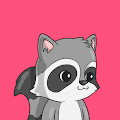 Look At My Raccoon 看看我的 Raccoon 是用 python 随机生成的 10.000 个项目的集合，并作为 ERC721 令牌存储在以太坊区块链上。 每只浣熊都是独一无二的，由 140 多种可能的特征生成，包括帽子、眼睛、
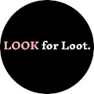 Look Fashion Loot LOOK 是一个以可组合元节方式进行的链上实验。 战利品项目的衍生产品。 对于那些敢于召唤 建立在 web3 时尚、空间机器、去中心化制造、沉浸式店面和开放世界 IRL 游
Looking Back (Limited Edition of 25) 生活总是以每小时 100 英里的速度前进，很容易陷入混乱。 最近，我一直在花时间回顾和欣赏这段旅程。 回顾（25 限量版）NFT 在过去 7 天内售出 25 次。《L
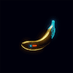 Looking Glass by ATSNFT ATSNFT 的 Look Glass 是一组纳米香蕉，将空投给所有在 2022 年 4 月 30 日之前购买的 Apes Together Strong 持有者。 使用并进入窥镜，风险自负。 以后要遵循的说明。 我们的社区 APES TOGETHER STRONG 团队专
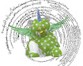 Loolee Bear Loolee Bear NFT 在过去 7 天内售出 16 次。Loolee Bear 的总销售额为 1.71 万美元。一只 Loolee Bear NFT 的平均价格为 106.9 美元。有 1,938 名 Loolee Bear 所有者，总共拥有 2,647 个代币。 Boonj
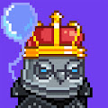 LoonBirds Loonbirds 是 10,000 个独特的像素艺术 NFT 的集合——生活在以太坊区块链上的独特的数字收藏品 PFP。 您的 Loonbirds 兼作您的 Birdyverse 会员卡，并授予会员专属福利，其中第一个是访问
Looney Luca 网站 | 了解卢卡 | 创作过程 | Price LevelsLooney Luca 是区块链上最酷的男孩。 通过浏览该系列来了解 Luca。 Looney Luca 是一个独特的 NFT 项目，讲述了 Luca 的故事。 它是由一个富有创
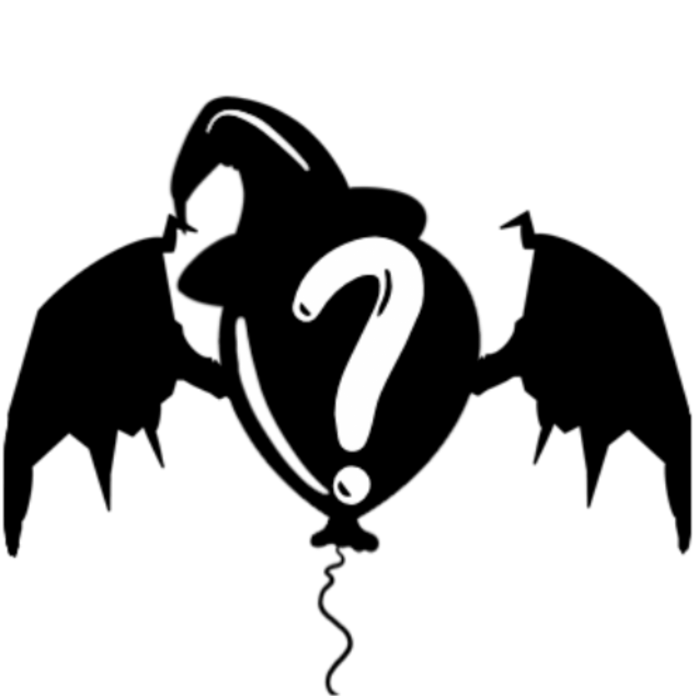 Loonies.wtf 125ETH NFT 赠品（非稀有性）见 discord 👇🏽▪️ https://discord.gg/thef8club 准备好流行了吗？ 但是等等……这 10.000 只独特的手绘疯狗想要继续他们的太空之旅。 你会帮助他们实现他们到达月球和更远
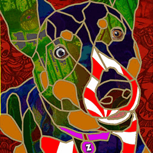 LoopieLooNFT LoopieLooNFT 是 9,663 个（WOOF 的电话代码）狗肖像，它们在以太坊区块链的边缘过着最美好的生活。 这些野蛮的 NFT 不能用任何所谓的“路线图”来控制，不能用任何“实
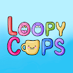 LoopyCups Loopy Cups 是 Loopy Donuts 的忠实伙伴。 每个 Loopy Cup 都是一件独特的艺术品，由 200 多种手绘特征组成。 数以千计的组合是可能的，但区块链上只允许存在 20,000 个。有关 Loopy Cups 和 Loopy Donuts 的
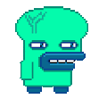 LooserGuys Minter 立即获取 LooserGuy 铸币机来铸造一个或多个 LooserGuy！购买 LooserGuy 只需通过铸币机购买！ 您可以通过宽松的方式购买许多宽松的人，他在一个中有 10 000 件物品🎁
Loot (for SpaceCowboys) 所有这些战利品包都将用于我们即将推出的游戏 Smoower https://www.smoower.com/travelLoot（太空牛仔）现在是 Smoow
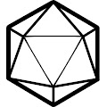 Loot Class 战利品等级是战利品衍生品。 它们是随机生成并存储在链上的 RPG 风格类。 随意以任何你想要的方式使用它。 过去 7 天没有售出任何战利品实验室。 lootlabs NFT - 常见问
Loot for Spark Era !!不要买这个！ Loot for Spark Era (LSE) 已经结束，LSE 资产将成为 Spark Era 最令人难忘的纪念品。 并且不会有游戏福利，只会在Opensea中存在纪念品。 作为一款角
Loot on Polygon (PolyLoot) PolyLoot 是一组 8000 件在 Polygon(Matic) 上的战利品，一种随机生成并存储在链上的冒险家装备。 故意省略统计信息、图像和其他功能以供其他人解释。 随意以任何你想要的方式使用
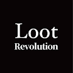 Loot Revolution (For Protesters) 欢迎来到 Loot Revolution（针对抗议者）。 为香港抗议者纪念。 Loot Revolution 试图参与来自 GameFi 的现实世界社会活动。 它释放了 MetaVerse 的力量，在每一集中都有一个 2019
Lootery.io - 02201 彩票是下一代彩票，以 NFT 形式售出 100.000 张彩票，并为 20 位随机抽取的中奖者提供超过 100.000 美元的奖金 过去 7 天没有 Lootery.io - 02201 售出。超过 100,000 美元的奖品！在 OpenSea 或这里以 5%
Lootlang Official Lootlang 是一种在链上生成和存储的完整语言。 故意省略词义以供他人解释。 随意以任何你想要的方式使用 Lootlang，即使是你的日常 schluba。 在 lootlang.com
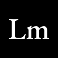 Lootmart Lootmart 将您的战利品袋拆分成单独的 Lootmart 物品，您可以交易并使用这些物品来升级您在 Loot 世界中的冒险家。过去 7 天没有售出任何 Lootmart。领取您的战利品
LootPebble (for Adventurers) LootPebble 是 LootRock 的衍生品，建立在 Loot 生态系统之上。 Loot Pebbles 是 LootRock 上元宇宙的基石。 准备好在 Loot Pebbles 上耕种/砍伐森林！LootRock 是 Loot 生态系统中第一个也是唯一一个
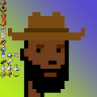 LootPunkss Loot & Punks ，计算机生成，总共 10,000 个，朋克也是计算机生成而不是复制密码朋克，使用数学计算 CryptoPunks 的原始元素并随机选择生成。 建立您自己的团队并在虚拟世界中炫
LootWorld - Wizards 这是 LootWorld 的创世纪系列。 有 8,888 个独特的手绘巫师可用，每个巫师都是由 150 多个特征创建的。 每个巫师都是 LootWorld Metaverse 中的一个可玩角色。早期持有者的好处包括： 进入土
Lord of the Doge PolyDoge 找到方法。 PolyDoge 带我们去月球。 PolyDoge 来统治他们。PolyDoge 卡是随机生成的、Chainlink 增强的、充满活力的加密历史片段。 PolyDoge 卡的持有者是精
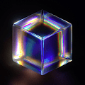 LOREM 1/1 欢迎来到 OpenSea 上的 LOREM 1/1 之家。 发现这个系列中最好的项目。过去 7 天没有售出 LOREM 1/1。什么是好看的字体？Apercu 之类的东西。关于创作者版税，我错过
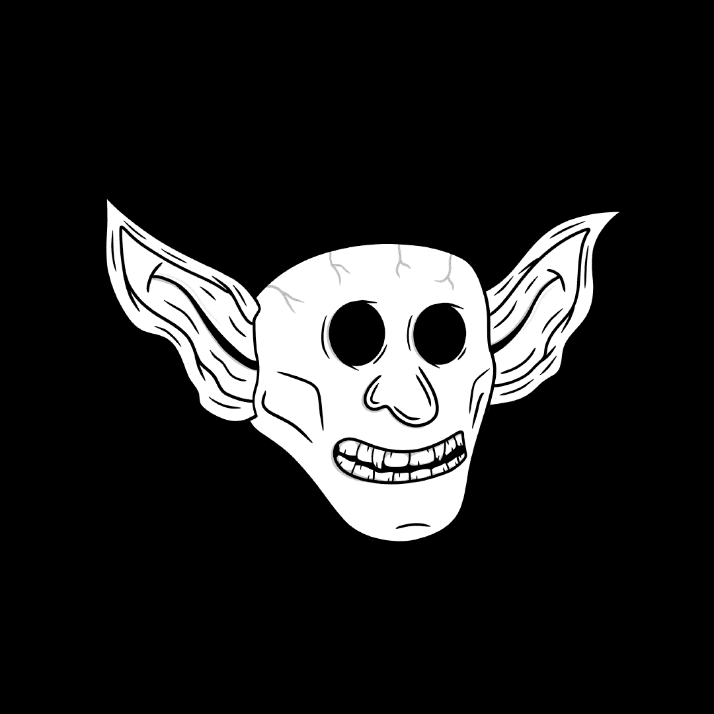 Los Goblineros 释放 10,000 个地精以接管区块链。 加入我们的旅程，外国佬。 Los Goblineros NFT - 常见问题（FAQ） ▶ 什么是 Los Goblineros？ Los Goblineros 是一个 NFT（非同质代币）集
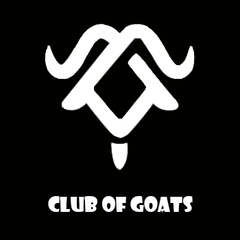 Loser G.O.A.T.S Loser G.O.A.T.S 系列（共 691 个）由 Club of Goats 提供支持，这是一个社区项目，旨在创建专注于元界和 NFT（Solana & Ethereum）的华语上最大的 DAO。 这是
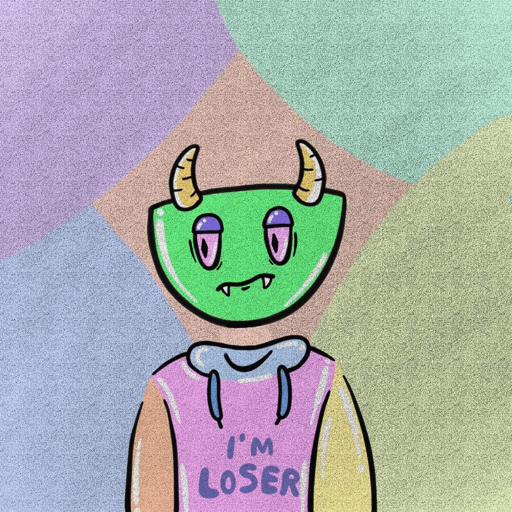 LOSER TOONZ OFFICIAl COLLECTION LOSER TOONZ 拥有 2222 个特殊且独特的区块链编号，从 1 到 2222，根据失败者 NFT 的性质，让每个所有者都闪耀、稀有和有价值，而 LOSER TOONZ 的核心是制作 NFT 和真正喜欢它的
Lost Cat' Lost Cats 由 Polygon 区块链上以编程方式生成的 NFT 集合中独特的手绘特征组成。 Lost Cat FUD Club 系列包含 10,000 只随机生成的 Lost Cats，它们来自 250 多个特征。 有各种各样的衣服、